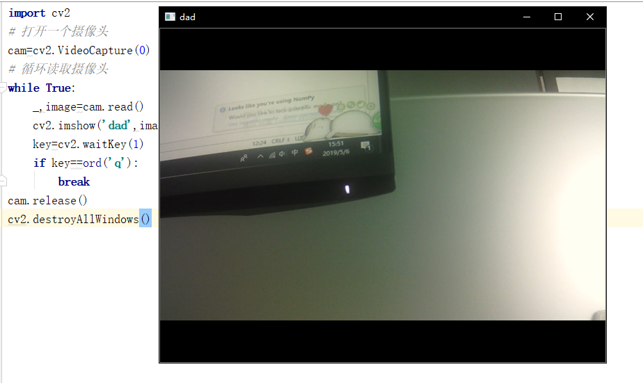
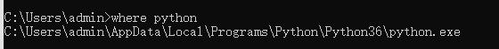

任务一 人脸检测
【任务描述】
人脸图像采集：不同的人脸图像都能通过摄像镜头采集下来，比如静态图像、动态图像、不同的位置、不同表情等方面都可以得到很好的采集。当用户在采集设备的拍摄范围内时，采集设备会自动搜索并拍摄用户的人脸图像。
人脸检测：人脸检测在实际中主要用于人脸识别的预处理，即在图像中准确标定出人脸的位置和大小。人脸图像中包含的模式特征十分丰富，如直方图特征、颜色特征、模板特征、结构特征及Haar特征等。人脸检测就是把这其中有用的信息挑出来，并利用这些特征实现人脸检测。
主流的人脸检测方法基于以上特征采用Adaboost学习算法，Adaboost算法是一种用来分类的方法，它把一些比较弱的分类方法合在一起，组合出新的很强的分类方法。人脸检测过程中使用Adaboost算法挑选出一些最能代表人脸的矩形特征(弱分类器)，按照加权投票的方式将弱分类器构造为一个强分类器，再将训练得到的若干强分类器串联组成一个级联结构的层叠分类器，有效地提高分类器的检测速度。
【任务实施】
步骤1 1.1获取实时的视频流
在本任务实施前，你应该有一个摄像头，并且已经配置好OpenCV的环境（可以使用 pip3 install opencv-python 下载）。
import cv2
# 打开一个摄像头
cam=cv2.VideoCapture(0)
# 循环读取摄像头的数据
while True:
_,image=cam.read()
cv2.imshow('dad',image)
key=cv2.waitKey(0)
if key==ord('q'): #当点击键盘中的q键时推出
break
# 记得释放摄像头和关闭所有窗口
cam.release()
cv2.destroyAllWindows()
在上面的代码中，我们首先使用 cv2.VideoCapture（0）打开了一个摄像头， 这里的0是指摄像头的索引，根据你自己本身的情况而定，当然0 也可以换成一个视频地址，那就变成了读取一段视频并显示，接着我们使用一个循环，读取摄像头中的数据，cam.read()返回两个数据，其中_ 是布尔值，如果读取帧是正确的则返回True，如果文件读取到结尾，它的返回值就为False。image就是每一帧的图像，是个三维矩阵。然后我们使用cv2.imshow()把图片显示出来，接着使用key接收 键盘值 如果这个键盘值等于 q的键盘值 则退出循环。
最后，我们不要忘记使用cam.release()释放摄像头，以及使用cv2.destroyAllWindows() 关闭所有窗口。运行结果如下：

步骤2 在视频流中使用haar分类器进行人脸检测
在本任务开始之前，我们需要到Opencv已经训练好的人脸检测模型 haarcascade_frontalface_default.xml，我们可以通过2中方式得到，第一是到Github上 opencv.下载对应的源码，然后找到opencv/data/haarcascades/目录，就可以得到该xml文件了。第二种方式是，找到你pip 的地址，一般在python安装地址的lib/site-pckages里面，我们可以通过打开cmd 输入where python查看python安装地址，有了这个模型以后，我们就可以开始编写人脸检测的代码了。

import cv2
# 加载人脸检测模型
face_date=cv2.CascadeClassifier('haarcascade_frontalface_default.xml')
image=cv2.imread(r'opencv_image/lena.jpg')
# 进行人脸检测
faces=face_date.detectMultiScale(image,1.3,5)
# 将检测到的人脸标注出来
for x,y,w,h in faces:
cv2.rectangle(image,(x,y),(x+w,y+h),(0,255,0),1)
cv2.imshow('img',image)
cv2.waitKey(0)
程序运行结果如下：

怎么样，是不是很简单，当然，这是最简单的识别人脸，前面已经介绍了如何打开摄像头获取图像，如果你已经掌握了的话，先不要看下面的代码，先自己尝试去写一个摄像头的人脸识别程序，写完之后再来看这个代码。如果可以顺利运行的话，我想你已经掌握了前面的知识点了。
# video
cam=cv2.VideoCapture(0)
while True:
_,img=cam.read()
gray=cv2.cvtColor(img,cv2.COLOR_BGR2GRAY)
faces=face_date.detectMultiScale(img,1.3,5)
for face in faces:
x,y,w,h=face
cv2.rectangle(img,(x,y),(x+w,y+h),(0,255,0),1)
cv2.imshow('opencv face',img)
flag=cv2.waitKey(1)
if flag==ord('q'):
break
cam.release()
cv2.destroyAllWindows()
运行结果如下：

步骤3 保存人脸ROI区域
ROI（region of interest），感兴趣区域。在机器视觉、图像处理中，从被处理的图像以方框、圆、椭圆、不规则多边形等方式勾勒出需要处理的区域，称为感兴趣区域，ROI。在Halcon、OpenCV、Matlab等机器视觉软件上常用到各种算子（Operator）和函数来求得感兴趣区域ROI，并进行图像的下一步处理。
在图像处理领域，感兴趣区域(ROI) 是从图像中选择的一个图像区域，这个区域是你的图像分析所关注的重点。圈定该区域以便进行进一步处理。使用ROI圈定你想读的目标，可以减少处理时间，增加精度。
感兴趣区(Region of Interest,ROIs) 是图像的一部分，它通过在图像上选择或使用诸如设定阈值(thresholding) 或者从其他文件(如矢量> 转换获得等方法生成。感趣区可以是点、线、面不规则的形状，通常用来作为图像分类的样本、掩膜、裁剪区或及其他操作。
在计算机视觉中，图像ROI提取也是一个重要的内容，它可以将你感兴趣的内容提取出来做进一步的操作。例如：在人脸识别中，你需要先检测出人脸，并提取人脸ROI区域进行下一步的人脸识别；在车牌识别中，你需要提取检测到的车牌ROI区域，并进行下一步的识别等等。
事实上，这种操作在OpenCV中并不难，你只需要得到你想要提取的ROI区域的坐标和宽高即可，我们可以使用如下的代码实现：
import cv2
face_date=cv2.CascadeClassifier('haarcascade_frontalface_default.xml')
cam=cv2.VideoCapture(0)
while True:
_,img=cam.read()
gray=cv2.cvtColor(img,cv2.COLOR_BGR2GRAY)
faces=face_date.detectMultiScale(gray,1.3,5)
for face in faces:
x,y,w,h =face
#获得人脸roi区域，并保存
face_img=img[y:h+y, x:w+x]
cv2.imwrite('faceroi.jpg',face_img)
cv2.imshow('i',img)
cv2.waitKey(1)
cam.release()
cv2.desotryAllWindow()
本任务实战代码如下,位于/xm3/rw1.ipynb 同学们来运行一下吧